VELO Design System
Стеклянно-белая система для wellness-практик в Telegram
v1.0.0 · 2026-06-04 · light-only ·
design-system v1.1.0О системе
Единый источник правды для визуала VELO: слоистые токены
(Primitives → Semantic → Component), бренд-мотив (мандала + знак Θ), шрифт Marmelad,
каталог компонентов и паттернов. Цвета/размеры берём только из токенов
(--velo-*), без хардкода. Шесть разделов — см. навигацию выше.